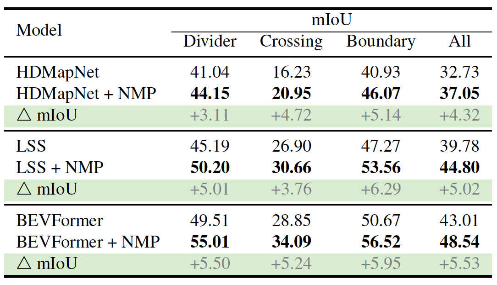
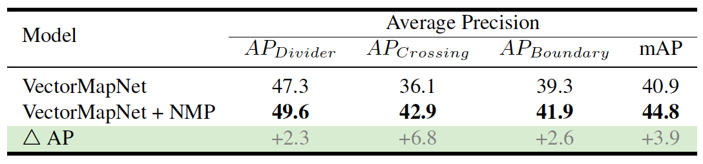
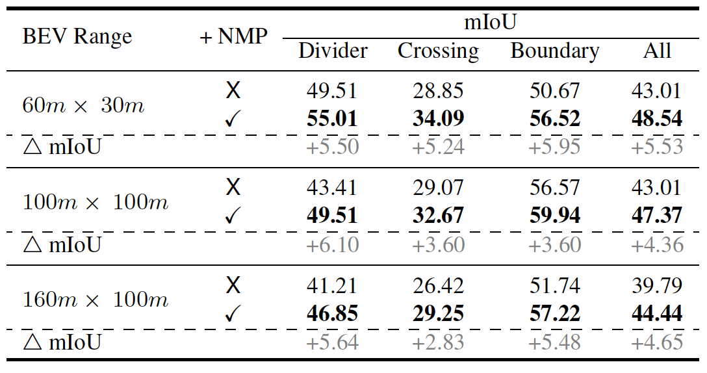
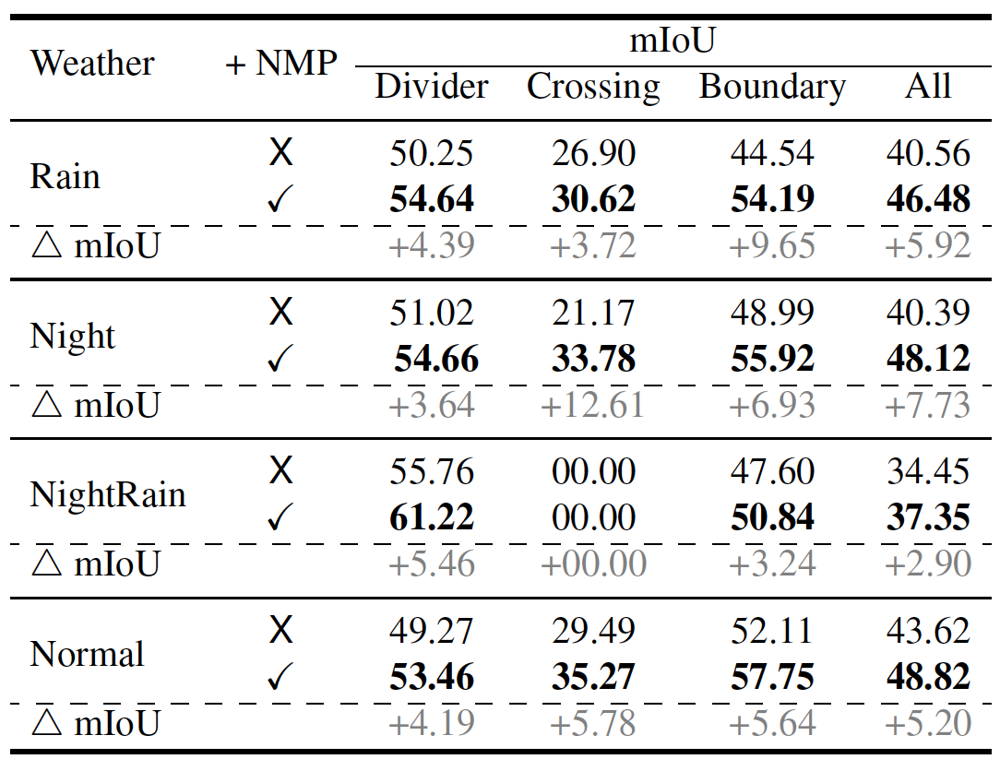
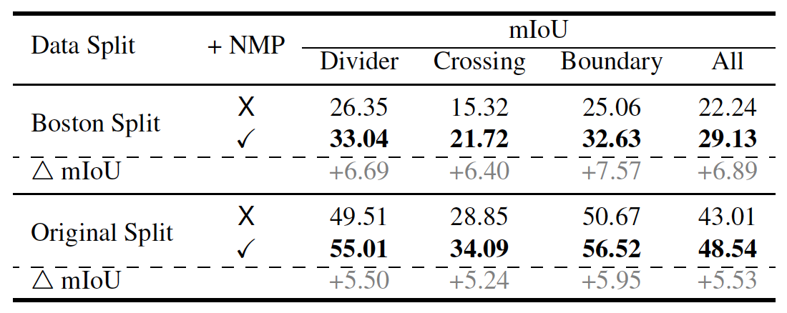
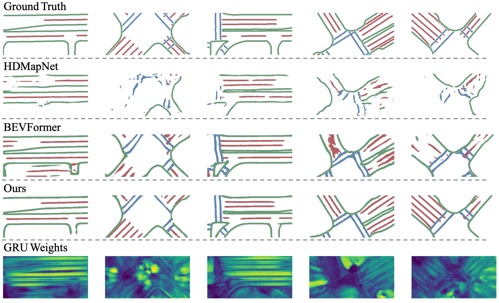

1Shanghai QiZhi Institute,
2IIIS,Tsinghua University,
3MIT
The Neural Map Prior (NMP) is a novel learning-based system that employs a neural representation of global maps to automatically update global maps and improve local map inference performance for autonomous vehicles through cross-attention and learning-based fusion, resulting in stronger performance in adverse weather conditions and longer horizons.
Demos
Demonstration of NMP for autonomous driving in adverse weather conditions. Ground reflections during rainy days make online HD map predictions harder, posing safety issues for an autonomous driving system. NMP helps to make better predictions, as it incorporates prior information from other vehicles that have passed through the same area on sunny days.
Abstract
High-definition (HD) semantic maps are crucial for autonomous vehicles navigating urban environments.
Traditional offline HD maps, created through labor-intensive manual annotation processes, are both costly and incapable of accommodating timely updates.
Recently, researchers have proposed inferring local maps based on online sensor observations; however, this approach is constrained by the sensor perception range and is susceptible to occlusions. In this work, we propose Neural Map Prior (NMP), a neural representation of global maps that facilitates automatic global map updates and improves local map inference performance.
To incorporate the strong map prior into local map inference, we employ cross-attention that dynamically captures correlations between current features and prior features. For updating the global neural map prior, we use a learning-based fusion module to guide the network in fusing features from previous traversals. This design allows the network to capture a global neural map prior during sequential online map predictions.
Experimental results on the nuScenes dataset demonstrate that our framework is highly compatible with various map segmentation and detection architectures and considerably strengthens map prediction performance, even under adverse weather conditions and across longer horizons. To the best of our knowledge, this represents the first learning-based system for constructing a global map prior.
Main Idea

Main idea. Traditional offline semantic mapping pipelines (first row from left) involve a complex manual annotation pipeline and do not support timely map updates. Online HD semantic map learning methods (second row from left) rely entirely on onboard sensor observations and are susceptible to occlusions. We propose the Neural Map Prior (on the right), an innovative neural representation of global maps designed to aid onboard map prediction. NMP is incrementally updated as it continuously integrates new observations from a fleet of autonomous vehicles.
Architecture
The model architecture of NMP. The top yellow box illustrates the online HD map learning process, which takes images as input and processes them through a BEV encoder and decoder to generate map segmentation results. Within the green box, customized fusion modules—comprising C2P attention and GRU—are designed to effectively integrate prior map features between the encoder and decoder, subsequently decoded to produce the final map predictions. In the bottom blue box, the model queries map tiles that overlap with the current BEV feature from storage. After the update, the neural map is returned to the previously extracted map tiles.
Results

Quantitative analysis of map segmentation. The performance of online map segmentation methods and their NMP versions on the nuScenes validation set. By adding prior knowledge, NMP consistently improves these methods.

Quantitative analysis of map detection. The performance of map detection method and its NMP version on the nuScenes validation set. Results show that by adding prior knowledge, the NMP enhances the quality of VectorMapNet.

Comparison of model performance at different BEV ranges. As the perception range increases, it is difficult for the online method to achieve good results; NMP significantly improves the results.

Performance in adverse weather conditions. Neural map priors are particularly useful on rainy days and at night than in normal weather.

Performance on Boston split. The original split contains unbalanced historical trips for the training and validation sets; Boston split is more balanced.
Comparison

Qualitative results. From the first to the fifth row: Ground truth, HDMapNet, BEVFormer, BEVFormer with Neural Map Prior and GRU weights. We also visualize zt, the attention map of the last step of the GRU fusion process. The model learns to selectively combine current and prior map features: specifically, when the prediction quality of the current frame is good, the network tends to learn a larger zt, assigning more weight to the current feature; when the prediction quality of the current frame is poor, usually at intersections or locations farther away from the ego-vehicle, the network tends to learn a smaller zt for the prior feature.
-->